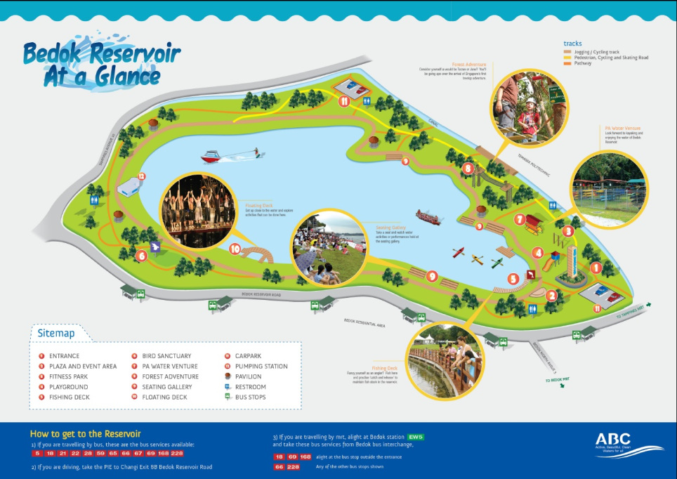
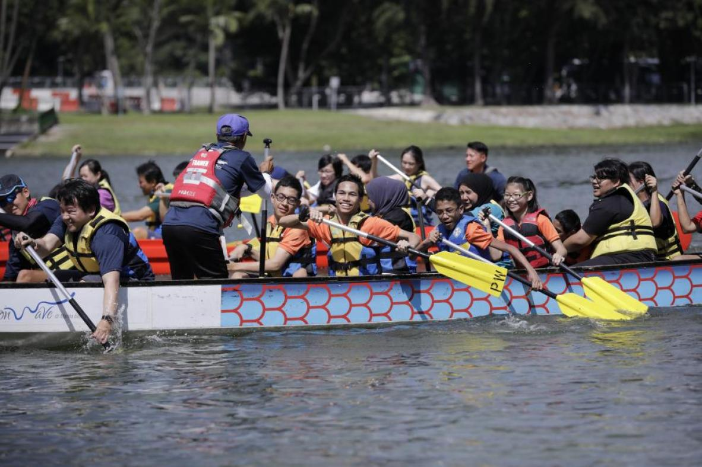
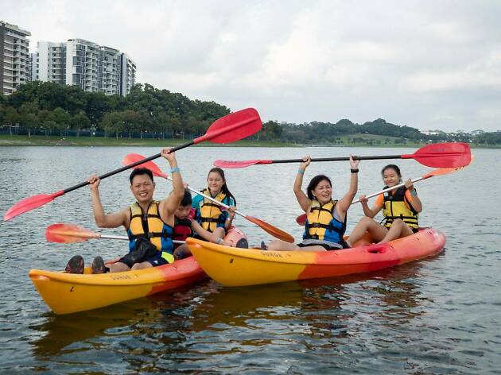
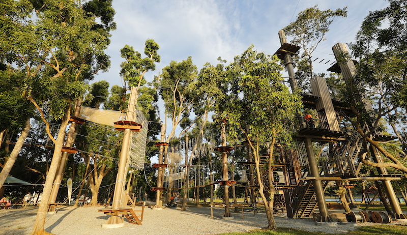
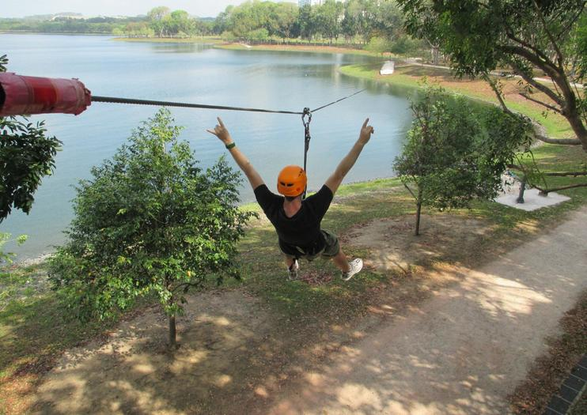
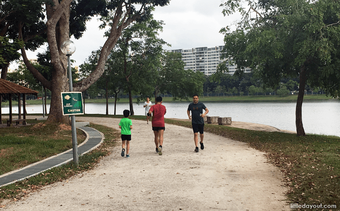
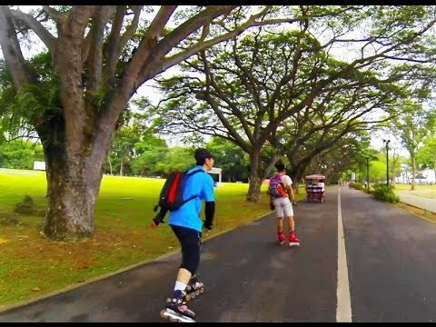
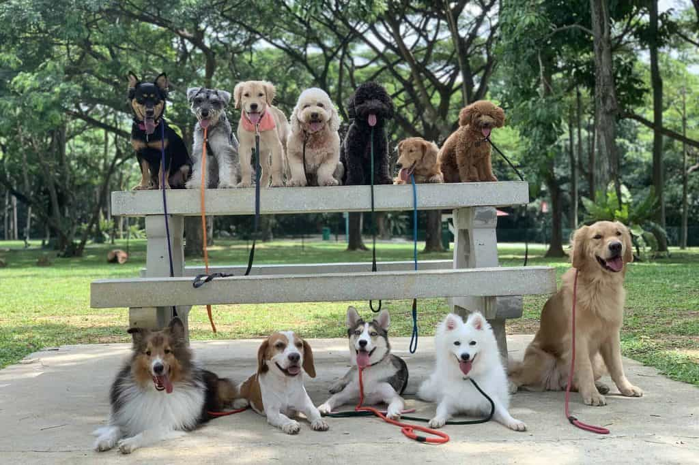

🌿 Bedok Reservoir Park 🌿
Bedok Reservoir Park - A popular place for fun and activities in Singapore, but slowly being avoided and forgotten by Singaporeans. This is due to the rising suicide cases in 2011 and 2012. It has since then became an infamous location. Over the years, with the upgradings and renovations done, Bedok Reservoir Park can be a good location for many. From joggers, to adrenaline junkies, to water sports enthusiasts, it is a all-in-one location to relax your mind.
Park Map 💡
It might get a little confusing getting around the park, so use this map for ease and convenience. Fret not, the park is wheelchair friendly too.
Activities 📣
Calling for all Water Junkies to the Passion Wave
 The park encircles the 88-hectare Bedok reservoir. Water sports enthusiasts can start gathering at the park to dragon boat or kayak at an affordable rate!
Opening Hours: Tuesday to Sunday 9AM - 6PM (closed on Mondays)
Contact: 97101697
Email: Passion Wave
Prices: Dragonboat (orientation programme): $15/ person
Kayaking (2 hours): $10
Kayaking (1 day): $17
For more information: visit their website.
Calling for all Adrenaline Junkies to the Forest Adventure
 Head on down to Singapore's first and only treetop obstacle. A unique & unforgettable experience is guaranteed. Feel the exhilarating wind while flying across the 300m zipline above the water.
Opening Hours: Tuesday to Sunday 9.30AM - 6.30PM (closed on Mondays)
Contact: 81007420
Prices: Adult $20, Child (7-12 y/o) $10
Book your appointment now
Calling for all fitness enthusiasts to the 4.3km track
 There are many activities to do such as running, inline skating, cycling. Come on down for a fun time now! For those who are keen to learn inline skating, there are lessons available too.
Weekend hours: 10.30AM - 12PM, 2PM - 3.30PM, 3.30PM - 5PM, 5PM-6.30PM
Contact: Jordan Yeo 94523955
Email: Skatextremesg
For more information: visit their website.
Directions 🌍
Bedok Reservoir Park is located in the Eastern part of Singapore, and is easily accessible via public transport, car, or by foot if you live nearby.
Bedok Reservoir MRT station Exit A is a 3 minutes walk to the entrance of the park.
Address:
760 Bedok Reservoir Rd, Singapore 479245
Park Lighting Hours:
Monday to Sunday 7PM - 7AM (Head down during this time if you are not afraid of it's spooky history.)
Ideal time to visit to avoid the sun 🌞:
7AM-11AM or 4PM-7PM
Getting there by train:
Bedok Reservoir Station DT30 (Downtown Line)

Getting there by bus:
Bedok Resvr Stn Exit A (84201), 3 minutes walk away: Bus no. 18, 28, 46, 66, 67, 69, 168, 228, 506
Opp the Clearwater Condo (75341), 1 minute walk away: Bus no. 5, 18, 21, 22, 28, 46, 59, 67, 69, 168
It is a dog-friendly park! However, remember to leash your dogs in accordance to the National Parks Board's rule for the safety of all park users. If you are lucky enough, you might be able to catch a professional dog walker on the weekends!
 The park is not sheltered so bring your umbrellas along. 🌧
A magnificent panoramic views of the reservoir is promised so bring along your camera to capture the magical moments.
Location: 📍
Follow and tag Bedok Reservoir Park on Instagram #bedokreservoirpark
Back to Top